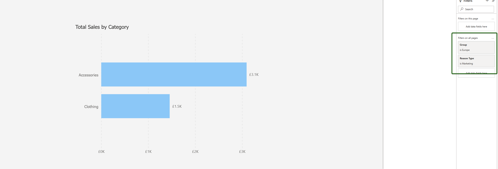
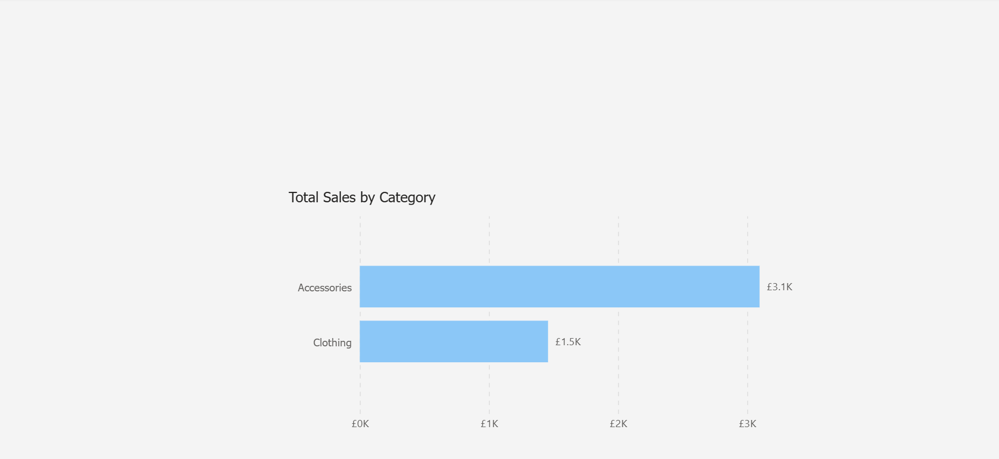
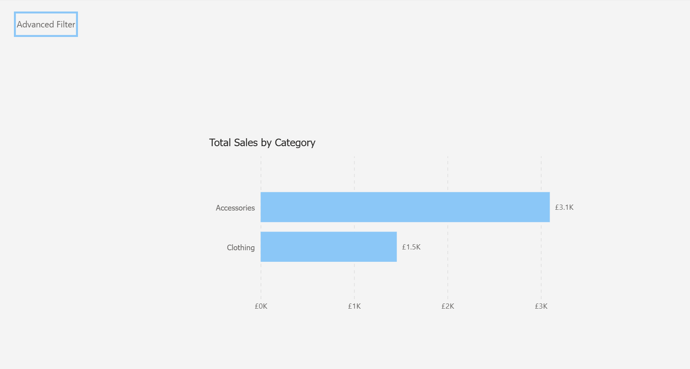

Context
In our source system there were a number of fields that could be configured or unlocked by a customer depending on their payment tier.
The question was raised as to whether, in Analytics, it was possible to slice the data in the reports using any of these configured fields. Because some customers do not have these fields it was decided that these potential slicers should not form part of the report slicer panel that we already have in place.
The investigation was a feasibility study into whether these slicers could be added to the filter panel to the right hand side of Power BI and to determine if any selections made would carry through to all pages of the report.
How could we ensure that these customers as well as those on another price tier have a good user experience?
Problem
We have a subset of our customer base that pay for the use of configurable fields in the core system. We want to allow these customers to filter the analytics reports using these fields while at the same time keeping this as discreet as possible so that other customers do not question what these fields are.
Assumptions
It is assumed that the configurable fields have been included as part of the ETL for the various tables and are available as fields in the relevant dimension tables in the semantic model.
Option 1 - Filter Pane
The suggestion is to add these fields to the side filter pane and educate these users about them. However there was uncertainty as to whether a selection made on one page would persist to a different page of the report.
More specifically if the user navigates to another page and then to a drill through page will the slicer selection chosen impact the metrics being shown in these pages? This is what we want as we don't want the user having to duplicate the effort of making these selections in the slicers each time they navigate to another page. This spike was to investigate this.
The scenario is as follows:
- The user opens the report and is on the main page.
- These configurable fields are already in place in the report side filter pane.
- The user makes a selection from one or more of these slicers

Outcome
Yes, this scenario as described is achievable in broad terms but it might require further consideration in terms of actual implementation. The simplest approach is to drag in the relevant field into the side filter pane under the section "Filters on all pages". The user can then make their selection(s) accordingly and these will propagate to all pages.
Advantages
- Easy to Implement.
- Fast to develop.
- Relatively discreet / subtle. Little change in the existing UI.
Disadvantages
- Confusing if user forgets slicers persist across pages.
- Inelegant as user has to be familiar with side filter pane.
- Some backend work if a snowflake schema is required.
Option 2 - Bespoke reports for these "configured fields" customers
Overview
Create new versions of these reports specifically for the "configured fields" customers. In these reports the existing slicers in the slicer panel on the UI would be extended to include these new fields.
Advantages
- Total control per customer.
- Clean UX - no requirement to involve the side filter pane for the end user.
Disadvantages
- Not scalable if several customers have or will have configured fields.
- Maintenance nightmare as would have duplicate copies of the same report so any further dev or bug fixes etc. would need to be done twice.
Option 3 - A hidden page with advanced slicers on
Overview
An additional button added to the main page which navigates the user to a hidden page containing these configured fields as slicers to allow the user to set accordingly and then be able to close this page / return to the main page. The page navigation would be dynamic (based on measures) and dependent on the customer / environment.
So for a "normal" customer, the button text, fill and navigation properties would be set so that the button is invisible and they would be unaware of its existence and even if the user accidentally clicked it, the dynamic navigation means it won't take them anywhere.
For a "configured fields" customer, the button would be prominent on the main page and would navigate to a second page with the configured field slicers.


Clicking on this button navigates the user to either a pop up menu or a new page displaying the configured fields slicers that they can set.
Advantages
- Best user experience.
- Elegant and scalable assuming proper back end architecture.
- Will easily support multiple field selections as well as the snowflake schema.
Disadvantages
- Requires dynamic logic based on customer context which we don't currently have in the back end warehouse.
- Complexity added to backend (would need a way to identify the "configured fields" customers and the "normal" customers) and front end with measure logic.
- Could be considered an over-engineered solution.
Questions
How do we want to implement this? A number of the fields relate to more than one entity / dimension. Are we expecting that if the user selects, for example, a certain "Discipline" that this filters all the fact tables at the same time?
Or do we want to modularise the selections so a user can select a certain placement discipline separately from a vacancy discipline, for example?
If we do want one slicer to filter all entities at once, we would be looking at a snowflake schema to achieve this. This has shades of the type filter we attempted to implement in the Appointments report for both calls and meetings.
If not and we want the slicers to be entity-specific (so for example one slicer to select the placement discipline and a different slicer to select the vacancy discipline) this might be overwhelming / confusing for the end user due to the number of similarly named slicers to make selections from.
Additionally I wonder whether if several slicers are applied, we may get ambiguous filtering behaviour due to the data model.
Presumably the approach we take in this report is to be rolled out across all reports in the analytics suite? That being the case, does the above question about slicers affecting multiple entities at once require more thought?
Also more generally, this approach to employ user-selectable slicers in the "Filters on all pages" filter pane may work for this report but might cause concern in other reports. The slicer selection is applied to every metric in every page of the report. Could this cause unexpected results / broken visuals or "(blanks)" being surfaced? Might it conflict with other slicers we have already set?
Summary
Option 1 is the way to go on this one. As it solves the problem with the right amount of rigour and has the advantage that it is easy and fast to implement. We just need to understand whether we will have a separate slicer per entity or not and need to take care that this does not disrupt existing context in report pages.
Option 2 while it would work introduces additional maintenance overhead which is not something we want unless there is no other alternative.
Option 3 offers a scalable solution, allowing slicers to be displayed to only the audience that wants them via dynamic navigation. However, this would require introducing customer-specific data into the dataset (e.g. a field per customer for "HasConfiguredFields"), which is not currently present in the model. This type of infrastructure and model-level change falls outside the scope of this spike and would require technical expertise in our back-end architecture and data orchestration processes which is not within this current remit.
What Happened Next?
The team chose the initial option and the slicers were successfully added to the filter pane in various reports in the analytics suite. The customer feedback received was positive.